Best strategy per ticker
Walk-forward study generated 202608240108. Full tables in
best_per_ticker.csv and all_results.csv.
Statistical significance
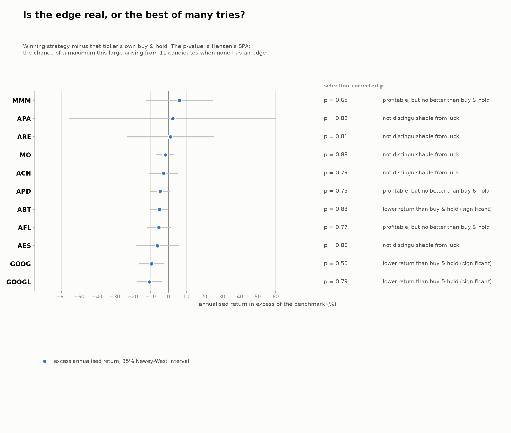
GOOGL 6.5 Volatility targeting with risk-free asset
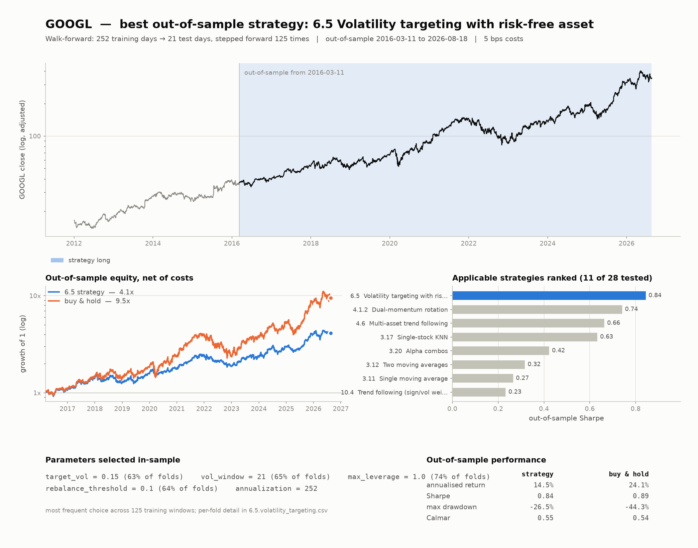
MO 6.5 Volatility targeting with risk-free asset
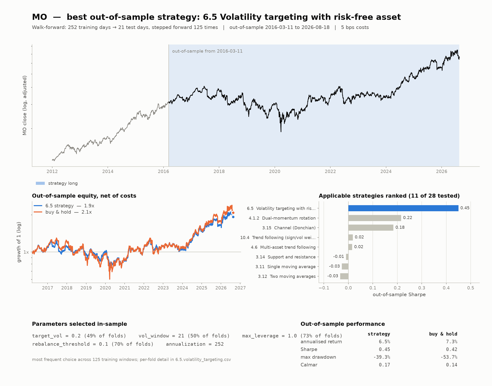
APA 3.11 Single moving average
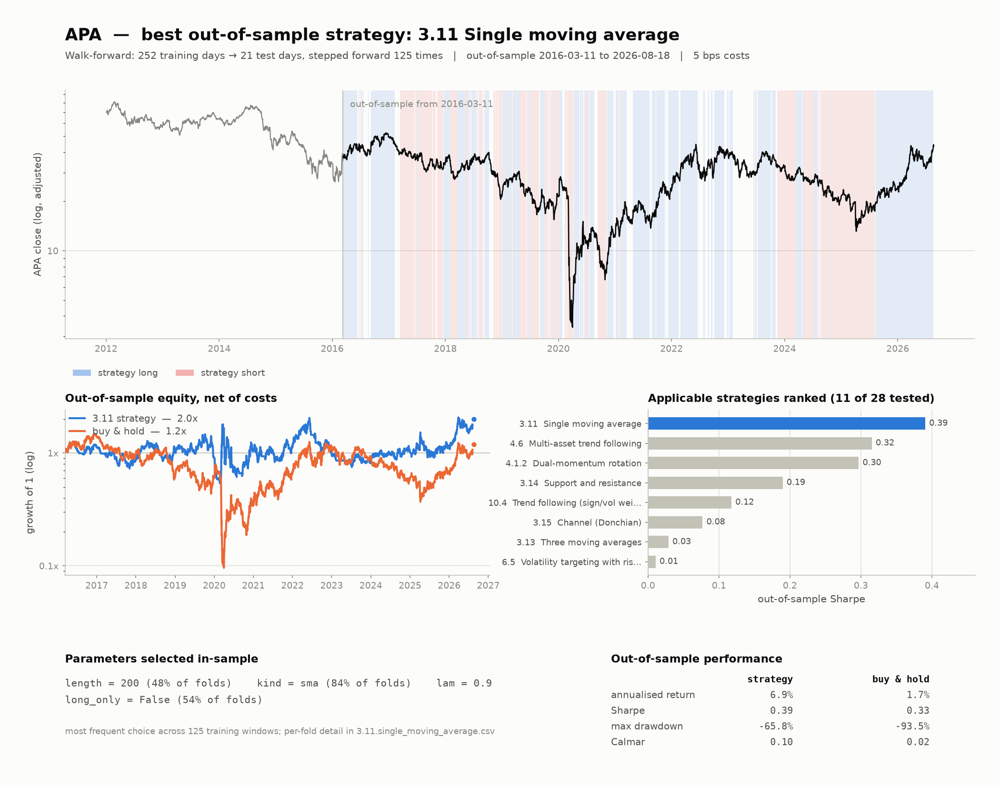
AFL 6.5 Volatility targeting with risk-free asset
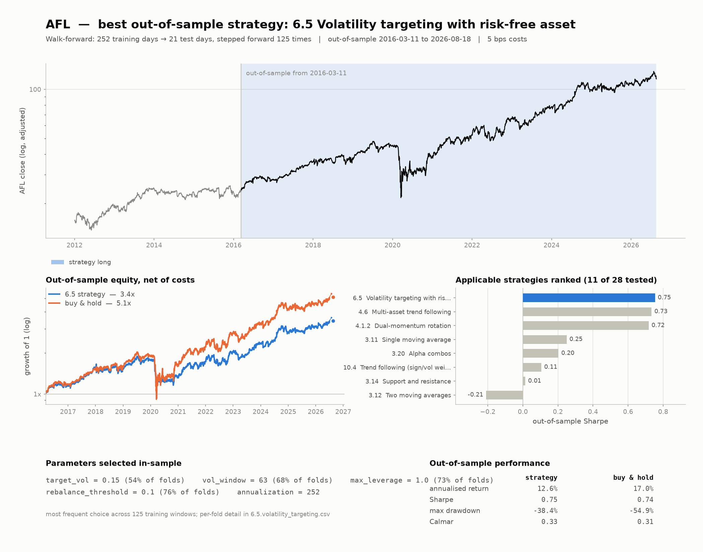
ABT 6.5 Volatility targeting with risk-free asset
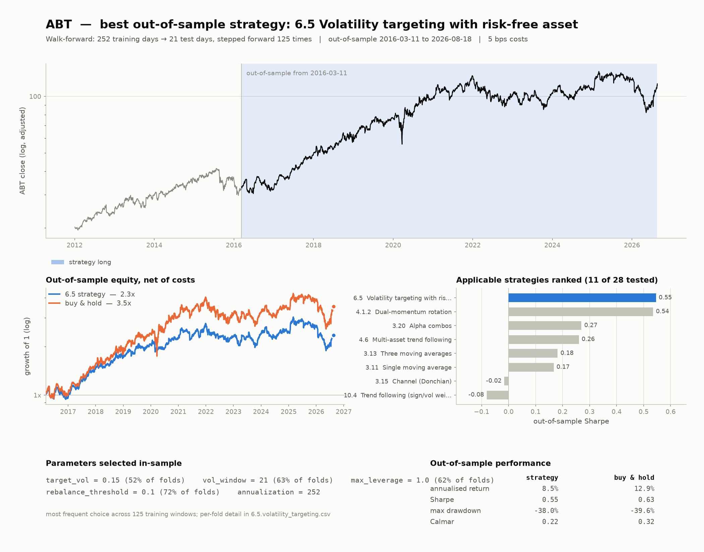
MMM 3.15 Channel (Donchian)
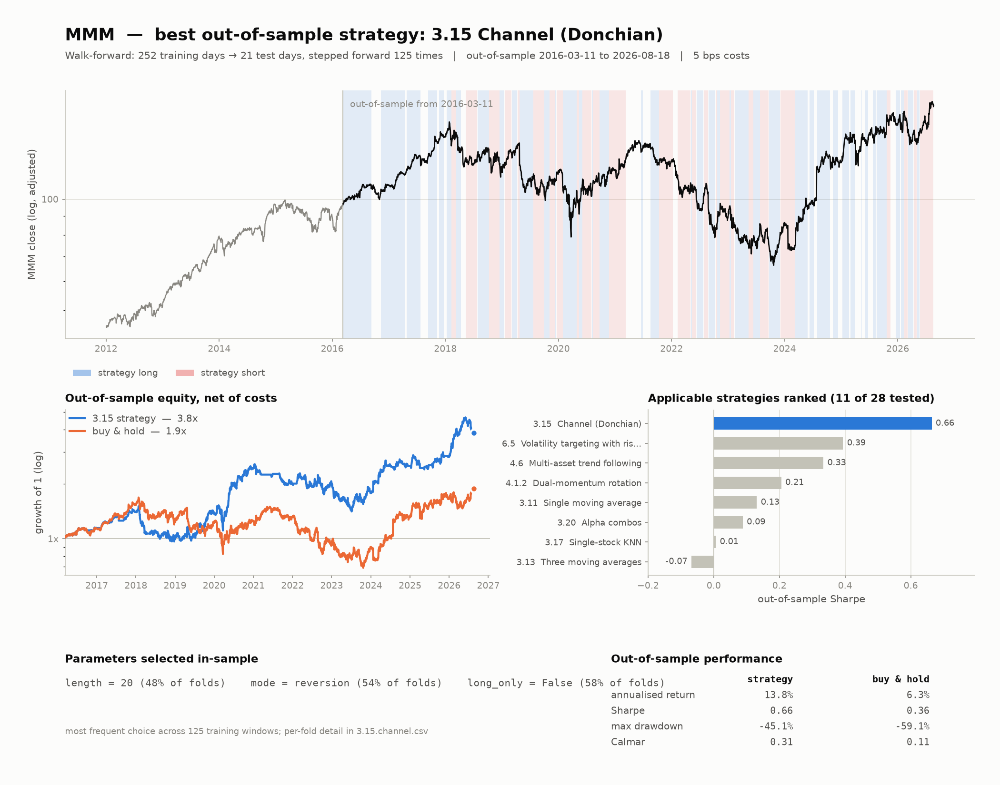
ACN 6.5 Volatility targeting with risk-free asset
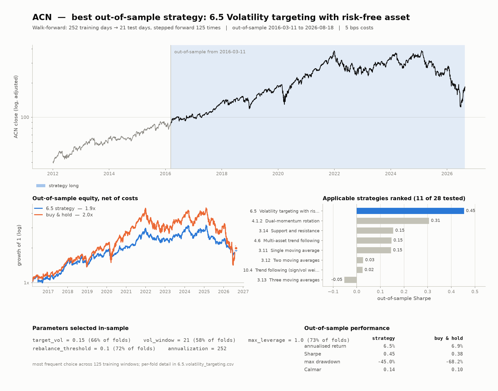
APD 6.5 Volatility targeting with risk-free asset
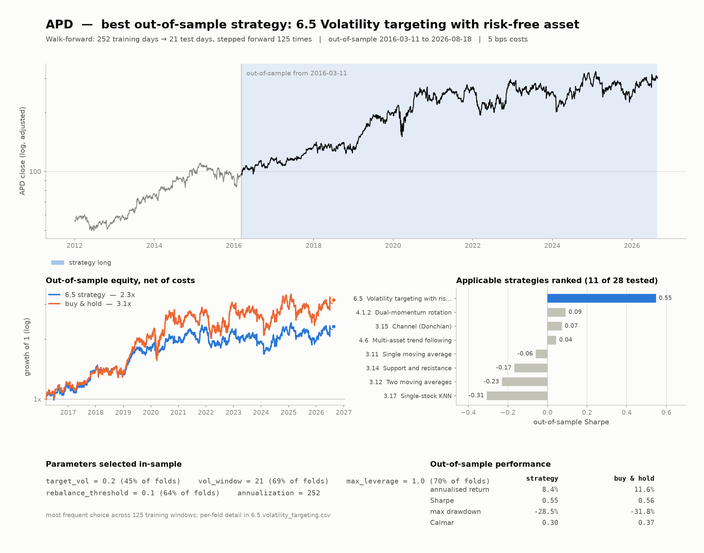
ARE 3.15 Channel (Donchian)
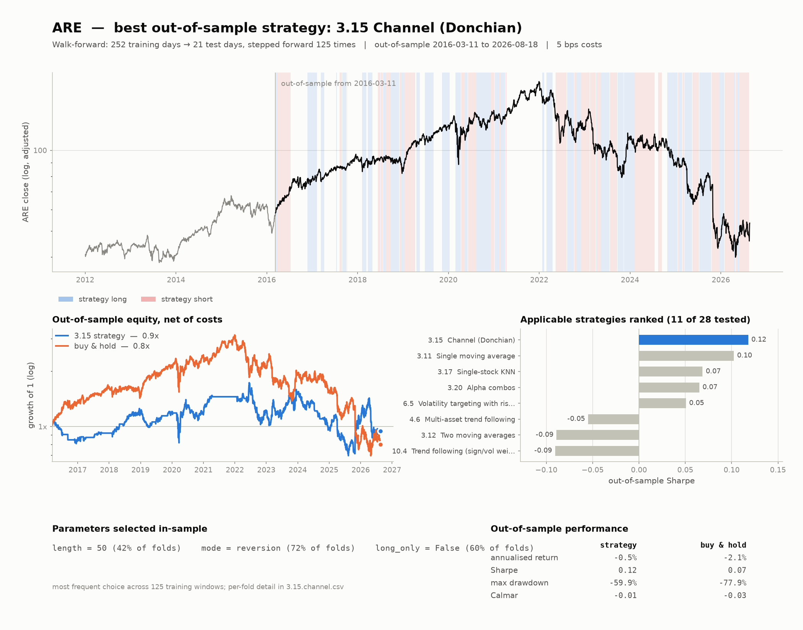
AES 6.5 Volatility targeting with risk-free asset
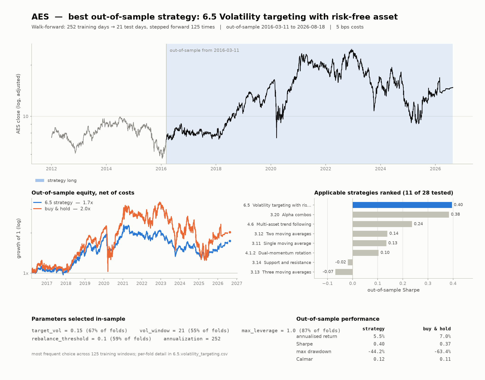
GOOG 6.5 Volatility targeting with risk-free asset
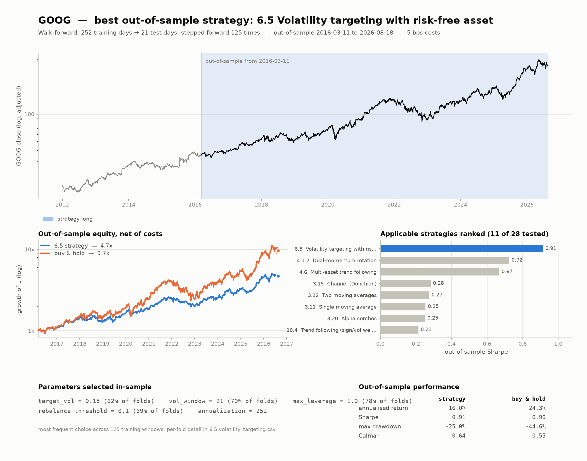